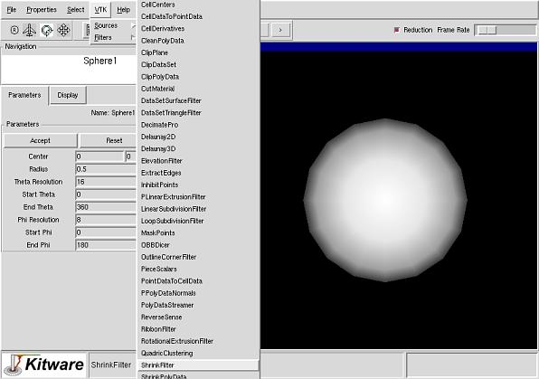

Step 4
Next we will create a filter which will take data from the sphere
source and process it. Sphere source creates polygonal data which
approximate a sphere. The quality of the approximation increases with
increasing resolution. To be able to see the polygons
created by the source better, we will shrink them so that there are
small gaps between individual polygons.
Create a shrink filter by selecting ShrinkFilter from VTK -> Filters
menu.

Last modified: Mon Dec 3 10:24:40 EST 2001